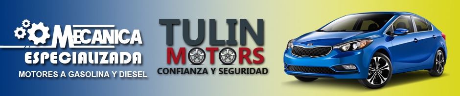
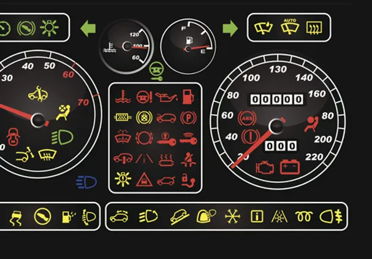
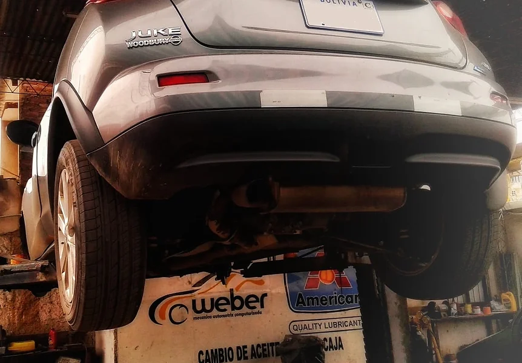
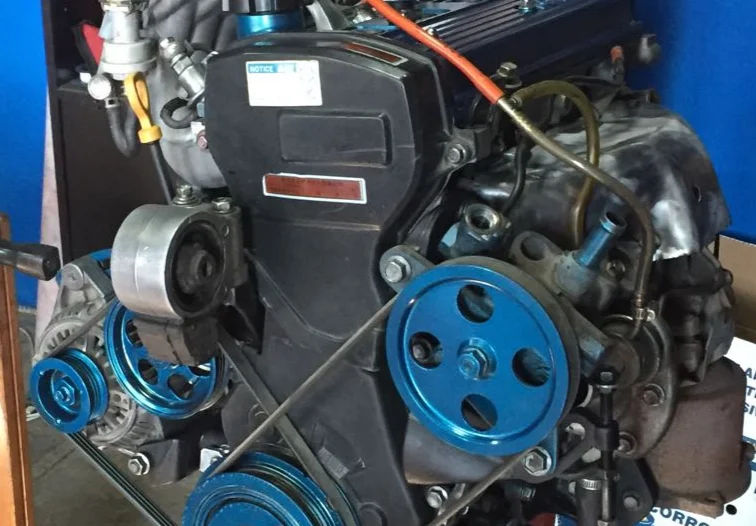
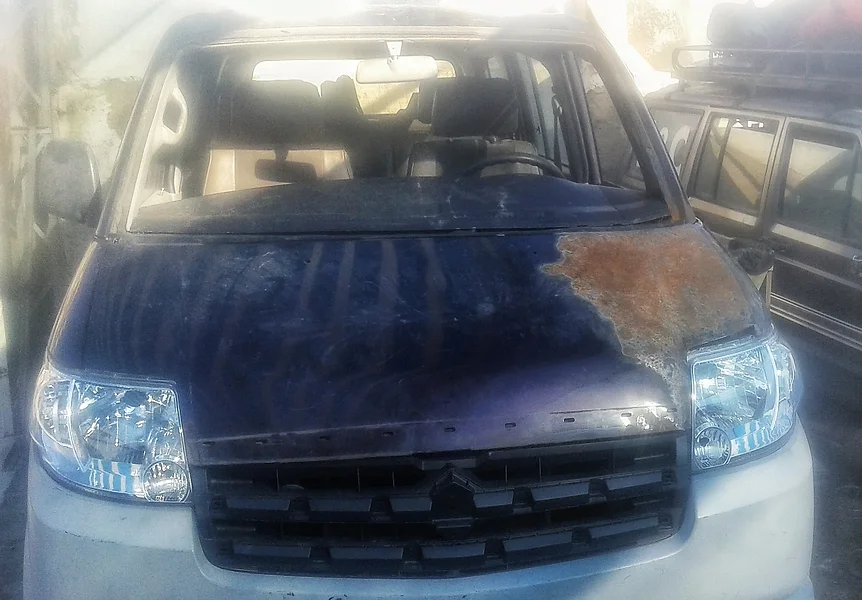
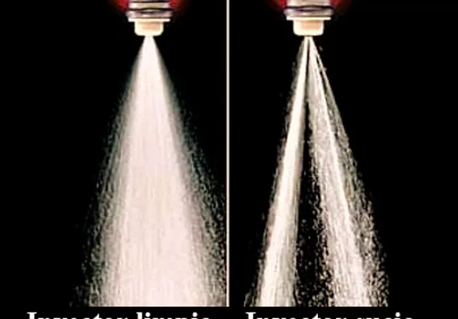

Diagnostico computarizado multimarca
No importa la procedencia de tu vehículo, igual lo diagnosticamos
En TULIN MECÁNICA AUTOMOTRIZ tenemos la capacidad, el conocimiento y los equipos necesarios para diagnosticar: motor, caja automática, frenos ABS, bolsas de aire y sistema SRS, presión de neumáticos TPMS y muchos otros sistemas sin importar la marca de tu vehículo.

Nuestro servicio de mantenimiento trabaja en los sistemas eléctricos y luces, sistema de refrigeración, cambio de aceite y demás fluidos, afinado de motores, sistema de frenos y frenos ABS, sistema de dirección y dirección asistida, sistema de suspensión y
transmisión mecánica y automática. Entréguelo a los profesionales de TULIN MECÁNICA AUTOMOTRIZ hoy. Sabemos qué hacer.

Si es una persona ocupada, no permita que los problemas del auto se interpongan en su camino. TULIN MECÁNICA AUTOMOTRIZ tiene los equipos y la experiencia adecuada para encontrar, reparar o reemplazar las piezas problemáticas de forma rápida y eficaz. Llámenos hoy para que nos encarguemos de sus necesidades.

TULIN MECÁNICA AUTOMOTRIZ tiene la experiencia necesaria en chapería y pintura. Ofrecemos el servicio al cliente de mejor calidad y trataremos su automóvil como si fuera nuestro. Salga del taller con su vehículo como nuevo. Le sorprenderá la diferencia con nuestros servicios.

Nuestro servicio en limpieza de inyectores ultra sonido garantiza el buen funcionamiento de los inyectores. Esto se reflejara en un mejor funcionamiento del motor y menor consumo de combustible. En TULIN MECÁNICA AUTOMOTRIZ te entregaremos un informe del antes y del después de la limpieza ultrasonido de tus inyectores. Sabemos qué hacer.

Si quieres comprar un vehículo, lo más importante es que quieras cuidar tu inversión, no dudes en recurrir a nosotros para una revisión o diagnostico previo. TULIN MECÁNICA AUTOMOTRIZ tiene los equipos y la experiencia adecuada para ayudarte a tomar tan importante decisión. Llámenos hoy para que nos encarguemos de su diagnostico antes de tomar una decisión.